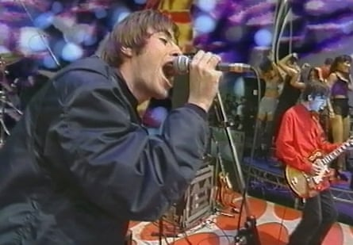
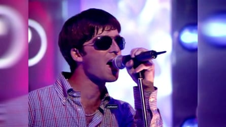
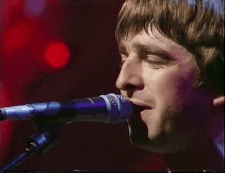

The music. The merch. The mad-for-it media coverage. What’s the story? Well, you’d have to be a caveman with his Stone Island parka hood up not to have noticed that Oasis are back.
Estranged brothers Noel and Liam Gallagher have finally ended their insults-flying feud, buried the Britpop hatchet and got their era-defining band back together. This Friday, the siblings will take to the stage together for the first time in 16 years. Their feverishly awaited reunion tour kicks off in Cardiff, before swaggering off on a sold-out, 41-date world tour.
What better excuse for a celebration of the group’s best ever TV appearances? From chaotic interviews to classic performances, tragic vigils to comedy moments, we rewind 12 times that Oasis rocked our screens and raised our bushy eyebrows. Let’s have it!
In the beginning was The Word (March 1994)
Oasis on The Word.Photograph: Channel 4
Introduced by presenter Mark Lamarr – now there’s a blast from the past – the band made their swaggeringly confident TV debut on Channel 4’s post-pub yoof TV fixture, The Word. Liam kept his coat on and wielded a Super 8 camera during an electrifying rendition of Supersonic, which made the nation sit up and take notice. At the after-show party, Noel ripped the piss out of every Londoner he met, while Liam took a dancer back to his hotel. Oasis had arrived.
Mud for it (June 1995)
The band made their Glastonbury debut the previous year , when Liam strode on to the NME stage and asked the crowd: “Are you lot gonna wake up for some proper songs?” After a stratospheric ascent, they returned to Worthy Farm 12 months later as Pyramid headliners. This was the infamous year when Liam partied with an off-the-leash Robbie Williams, who appeared on stage during Shakermaker and hailed the weekend as “the start of my new life”. Noel was less kind, dismissing his brother’s new mate as “the fat dancer from Take That”. A typically pugilistic set saw Liam challenge the front row to a fight. With Pulp headlining the next night, this was peak Britpop.
I’m outta mime (August 1995)
Noel Gallagher mimes on Top of the Pops.Photograph: BBC
The infamous “battle of Britpop” erupted when arch-rivals Blur moved their single Country House’s release to the same day Oasis launched Roll With It. The subsequent chart battle became headline news, but Oasis didn’t take the hype entirely seriously. When the band were forced to mime on Top of the Pops, the Gallaghers mockingly switched roles. Liam pretended to play guitar as Noel half-heartedly lip-synced lead vocals, while shaking his brother’s trademark tambourine. Bandmates Guigsy and Bonehead found it hilarious when Liam faked the guitar solo.
Confidence is a preference (February 1996)
At the height of their feud with Blur, Oasis got one up on their rivals by scooping a hat-trick of gongs at the Brit awards. During a typically chaotic acceptance speech, Liam and Noel taunted Damon Albarn and co with a karaoke version of Parklife, singing “Marmite” and “Shitelife” over the chorus. Liam told host Chris Evans that he wasn’t hard enough to remove them from the stage, before miming shoving the trophy up his backside. You don’t get that at the Oscars.
MTV unloved (August 1996)
Noel Gallagher performs on MTV Unplugged.Photograph: MTV
Riding high after their landmark Knebworth gigs, Oasis were due to play a pared-down acoustic set for MTV Unplugged. Liam pulled out on the day, citing illness. There were rumours he’d been out on a two-day booze bender and his brother claimed he’d turned up to rehearsals “absolutely shit-faced”. Noel announced on stage: “Liam ain’t gonna be with us because he’s got a sore throat, so you’re stuck with the ugly four.” Their 12-song set, with Noel singing his own lyrics, turned into a triumph. A miraculously recovered Liam watched from the balcony, swigging beer, slow hand-clapping and heckling, while Noel told him to “shut up”. The New York Times described it as “the entire Shakespearean rivalry of the Gallaghers, condensed into a single performance”.
Kevin & Perry go mad for it (January 1997)
On Harry Enfield and Chums, Kevin the Teenager was paid a visit by best mate Perry (Kathy Burke), just back from a trip to Manchester where he’d fallen under the influence of a certain band. He monkey-walked into the kitchen in a sheepskin coat and John Lennon sunglasses, swigging from a bottle of Oasis fruit drink (see what they did there?). “Result, sorted, top, mad for it,” said Perry, before promising to “Beat up a couple of cockney bastards.” To this day, many can’t see Liam Gallagher without picturing Burke’s impersonation. When the vintage sketch went viral recently, she tweeted: “Very nice to see this doing the rounds again. Lots of requests us to revive Kevin and Perry since the Oasis announcement. It’s not gonna happen. Mainly because I’m now 60 and Harry is 108 but thanks ever so for the love.”
Rock’n’Royle stars (September 1998)
When Noel was approached about using an Oasis song as the theme for a sitcom about a working-class Manchester family, he suggested Married With Children from Definitely Maybe. He was confused when the more melancholic Half the World Away, originally a B-side, was picked by Caroline Aherne and Craig Cash instead. When he watched the BBC gem for the first time, it all made sense. Noel now says he doesn’t think of Half the World Away as an Oasis song but rather as The Royle Family theme tune. When Aherne died in 2016, Noel Gallagher’s High Flying Birds paid tribute by adding it to their live sets.
Mum might say (February 2000)
Noel was in the middle of a CD:UK chat with the fresh-faced Ant and Dec when his phone rang. Seeing it was his mother, Peggy, he answered the call and told her: “All right, Mam. I’m on the telly with Ant and Dec.” He then passed the phone to Dec, saying: “It’s my mum. Do you want to say hello to her?” Dec advised Peggy to set her video for Saturday morning. When she asked after Ant, he joked: “He’s here next to us, looking as ugly as ever.” Noel took the phone back and said goodbye to his mum, before resuming the interview. Well played, son.
Mourning glory (May 2017)
In the wake of the Manchester Arena bombing, Oasis ballad Don’t Look Back in Anger became the city’s unofficial anthem. As a crowd gathered in St Ann’s Square and observed a minute’s silence for the 22 people killed, one woman spontaneously began singing it solo. Gradually hundreds of mourners joined in. The singer, Lydia Bernsmeier-Rullow, said the moment “gave her shivers”. Noel happened to be watching the TV news, admitting he felt a mixture of grief, pride and awe at the power of music to bring people together.
Definitely my tea (September 2017)
BBC Three docuseries Backstage Pass followed Liam as he headed to Lollapalooza in Paris to play a solo set. It went viral when he made a cuppa backstage, in the process drawing an analogy for the decline of the music industry. “Money’s too tight to mention, so I gotta do it myself,” he grumbled in a kitchenette. “Nobody buys records these days. In the 90s, I had about four people doing it. A little geezer’s doing the kettle. Our kid. Some other little cunt doing that. And some other little fucking idiot doing that. Nowadays you’ve got to do it yourself because these fucking little smartarses download tunes for nish. And they wonder why there’s no real rock’n’roll stars around any more.” Pass the biscuits.
Bacon roll with it (November 2020)
The Gallaghers’ encounters with Jonathan Ross were always entertaining. But our prize goes to Wossy’s 2020 interview with the younger sibling, quizzing Liam on his provocative quotes to see if he could remember who he was insulting. “He looks like a fucking balloon with a Weetabix crushed on top”? Liam guessed Noel. It was, in fact, Wayne Rooney. “I’ve had more fun with a tin of sardines”? That one was Noel. “I got told off for throwing stones at his windows, pissed-up, asking him to chuck down some bacon rolls”? Jamie Oliver. “They look like they’ve got nits and eat lentil soup with their sleeves rolled up.” Yep, Mumford & Sons. “I am a bit of a twat,” concluded Liam with an unrepentant shrug.
The Ticketmasterplan (August 2024)
When TalkTV anchor David Bull went over to correspondent Caroline Feraday via live video link for a discussion of the upcoming US Presidential election, she was too busy trying to buy Oasis tickets. Tapping away at her laptop and holding her credit card, the multitasking journalist said: “This couldn’t have been worse timing. I’m 36th in the queue, so if I suddenly stop talking, deal with it … I’m in, I’m in. Wait a minute … Talk among yourselves and let me get the tickets.” Feraday stressed that she was a genuine fan, recalling seeing the band at Knebworth. Bull replied: “As lovely as this is, what’s it got to do with American news?”